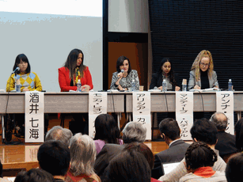

国際シンポジウム「世界のHPVワクチン被害は今」成功裏に終了しました
2018-03-26

２０１８年３月２４日（土）、東京大学武田先端知ビルにおいて、薬害オンブズパースン会議主催の国際シンポジウム「世界のＨＰＶワクチン被害は今」が開催され、３４０名の参加を得て、盛況のうちに終了しました。
シンポジウムの第１部「各国からの報告」では、
�‘�本から、薬害オンブズパースン会議事務局長で、ＨＰＶワクチン薬害訴訟全国弁護団代表の水口真寿美が、ＨＰＶワクチンの基本的問題点と日本の現状について報告した後、
�▲灰蹈鵐咼△�らは、被害者団体Rebuilding Hope Association HPV Vaccine Victimsの代表でクラスアクション訴訟の代理人弁護士でもあるモニカ・レオン・デル・リオ氏、
��スペインからは、被害者団体Association of Affected People due to the HPV vaccines in Spain"（AAVP）の代表アリシア・カピーラ氏、
�ぅぅ�リスからは、被害者団体UK Association of HPV Vaccine Injured Daughters（AHVID）の科学部門担当マンディープ・バディアル氏、
�ゥ▲ぅ襯薀鵐匹�らは、被害者団体Reactions and Effects of Gardasil Resulting in Extreme Trauma（REGRET）の広報担当アンナ・キャノン氏が、それぞれの国のＨＰＶワクチンをめぐる状況について報告しました。
海外からの報告者は、いずれの方も被害者の母です。
第１部の報告を通じて、多様で重層化するＨＰＶワクチンの副作用症状の発生や、ＨＰＶワクチンの有害事象報告が他のワクチンよりも圧倒的に多いことなどがいずれの国でも共通して認められ、「被害は日本だけで起きている」などという言説が誤りであることが明らかになりました。
また、医療機関において「心の問題」などと言われて適切な診療を受けることができないケースが少なくないこと、企業や政府がワクチンと副作用の因果関係を認めず、十分な救済策をとらず、被害者は、企業と政府を信頼してワクチンを接種しただけなのに、ワクチンを推進する医師やメディア関係者などから、「反ワクチン」というレッテルを貼られたり、症状の訴えがデマであると中傷されたりしている状況も共通であること、そのような中でも被害者団体が懸命な活動を続けていることが明らかになりました。
第２部のパネルディスカッションでは、第１部の報告者に加え、日本の集団訴訟の原告団代表である酒井七海氏、薬害オンブズパースンン会議の副代表である別府宏圀がシンポジストに加わり、薬害オンブズパースン会議メンバーの隈本邦彦と水口真寿美が、コーディネーターを務めて進行しました。
冒頭、まず酒井七海氏から適切な情報提供もなく、ＨＰＶワクチンを接種して副反応を発症し、現在は全生活に介助が必要な状況にあるという自分の被害の報告がありました。
その後、各シンポジストから、被害者が、ＨＰＶワクチンの被害に加え、中傷などの二重の被害を受けている深刻な実態やこのワクチンの危険性について依然として十分な情報提供がなされていないことが改めて指摘され、政府や企業は責任をもって救済をするべきであること、特に治療法の開発が急務であることが指摘されました。
また、このワクチンがこれまでのワクチンと異なったしくみのワクチンであることやこれまでの疫学調査の方法の限界、過去の薬害事件において、因果関係が科学的に完全に証明されるまでの間に冒された過ちの教訓が生かされていないこと、このワクチンと被害との因果関係を基礎づける研究の進展なども紹介され、活発な意見交換がなされました。
そして、このシンポジウムを契機に、ＨＰＶワクチンをめぐる問題の解決のために、国境を越えて連帯して取り組んでいくことを確認し、シンポジウムは成功裏に終了致しました。
ご参加いただいた皆様、準備に御協力いただいた皆様、ありがとうございました！
※当日の写真については、下記「関連資料・リンク等」をクリックしてご覧ください。
- 関連資料・リンク等
-
- コーディネーターとパネリスト（97 KB）
- パネリスト（131 KB）
- 会場全体（153 KB）
- 第2部 パネルディスカッション（123 KB）